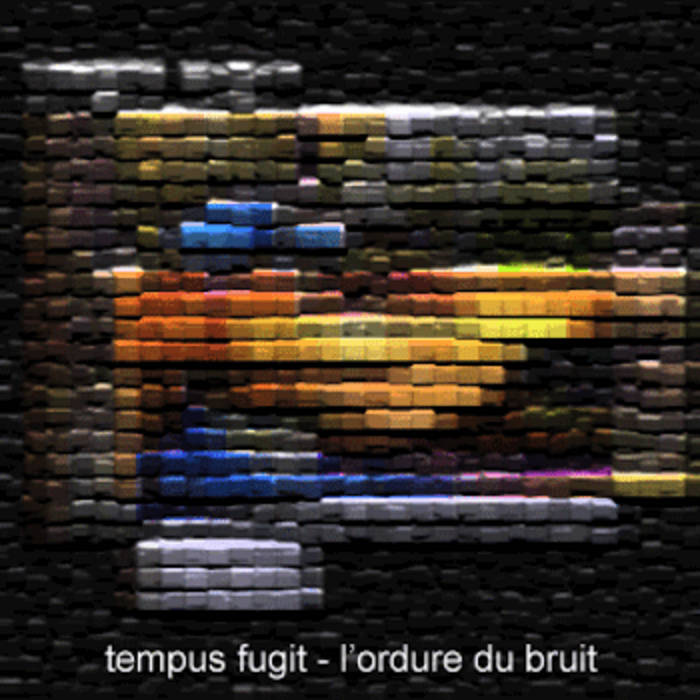

<!DOCTYPE html>

<html lang="en">
  <head>
    <meta charset="utf-8" />
    <title>objet</title>
    <meta name="keywords" content="guitar, looper, keiko tsuda, fnog" />
    <meta name="viewport" content="width=device-width, initial-scale=1.0" />
    <script>
      !(function (t, e) {
        var o, n, p, r;
        e.__SV ||
          ((window.posthog = e),
          (e._i = []),
          (e.init = function (i, s, a) {
            function g(t, e) {
              var o = e.split(".");
              2 == o.length && ((t = t[o[0]]), (e = o[1])),
                (t[e] = function () {
                  t.push([e].concat(Array.prototype.slice.call(arguments, 0)));
                });
            }
            ((p = t.createElement("script")).type = "text/javascript"),
              (p.async = !0),
              (p.src = s.api_host + "/static/array.js"),
              (r = t.getElementsByTagName("script")[0]).parentNode.insertBefore(
                p,
                r
              );
            var u = e;
            for (
              void 0 !== a ? (u = e[a] = []) : (a = "posthog"),
                u.people = u.people || [],
                u.toString = function (t) {
                  var e = "posthog";
                  return (
                    "posthog" !== a && (e += "." + a), t || (e += " (stub)"), e
                  );
                },
                u.people.toString = function () {
                  return u.toString(1) + ".people (stub)";
                },
                o =
                  "capture identify alias people.set people.set_once set_config register register_once unregister opt_out_capturing has_opted_out_capturing opt_in_capturing reset isFeatureEnabled onFeatureFlags getFeatureFlag getFeatureFlagPayload reloadFeatureFlags group updateEarlyAccessFeatureEnrollment getEarlyAccessFeatures getActiveMatchingSurveys getSurveys".split(
                    " "
                  ),
                n = 0;
              n < o.length;
              n++
            )
              g(u, o[n]);
            e._i.push([i, s, a]);
          }),
          (e.__SV = 1));
      })(document, window.posthog || []);
      posthog.init("phc_vqKUfwb05UaNZESJUtnmW25GZgZ7DabNlSXsmSyj0mB", {
        api_host: "https://e.abla.io",
      });
    </script>
    <!--<link href="https://fonts.googleapis.com/css2?family=Roboto+Mono&display=swap" rel="stylesheet"> -->
    <style>
      @font-face {
        font-family: "Roboto Mono";
        font-style: normal;
        font-weight: 400;
        src: local(""),
          url("../include/roboto-mono-v21-latin-regular.woff2") format("woff2"),
          url("../include/roboto-mono-v21-latin-regular.woff") format("woff");
      }
      body {
        background-color: #222;
        max-width: 800px;
        color: #fff;
        line-height: 1.6;
        font-family: "Roboto Mono", monospace;
        font-size: 1em;
        margin: 40px auto;
        padding: 0 10px;
      }
      code {
        font-size: 1.6em;
        color: #999;
      }
      h1 {
        font-weight: bold;
        font-size: 1.6em;
        margin-top: 2em;
      }
      hr {
        margin-top: 4em;
        border: none;
        background-color: #555;
        color: #555;
        height: 1px;
      }
      a {
        color: #aaa;
      }
      a:hover {
        color: #ccc;
      }
      img {
        margin-top: 4em;
        margin-bottom: 2em;
        max-width: 100%;
      }
      input {
        font-family: inherit;
      }
    </style>
  </head>
  <body>
    <br />
    <br />
  </body>
</html>
<h1>tempus fugit</h1>
<p></p>
<blockquote>
<p>&quot;tempus fugit is the ritual music for a post-apocalyptic society which has
descended into savagery in the bombed-out streets of new york. you're probably
asking, if the music is this harsh, why should i care? tempus fugit is worth
listening to for the same reason that we give such attention to classical
music -- the thought and skill that goes into piecing these individual
elements into a cohesive whole is he music was too complex for many, yet today
it is impossible to discuss the high points of culture without invoking these
same compositions&quot; - ron davies / splendid</p>
</blockquote>
<iframe style="border: 0; width: 100%; height: 42px;" src="https://bandcamp.com/EmbeddedPlayer/album=68375666/size=small/bgcol=333333/linkcol=ffffff/track=3709373179/transparent=true/" seamless><a href="https://tfugit.bandcamp.com/album/drinking-songs-for-vacuum-cleaners">Drinking songs for vacuum cleaners de Tempus Fugit</a></iframe>
<p><a href="https://tfugit.bandcamp.com/">bandcamp</a></p>
<hr/>
<p>objet &mdash; updated 07/02/23</p>

</body>
</html>
